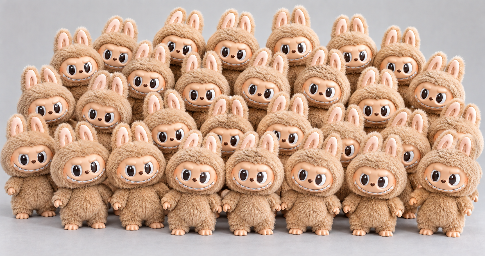
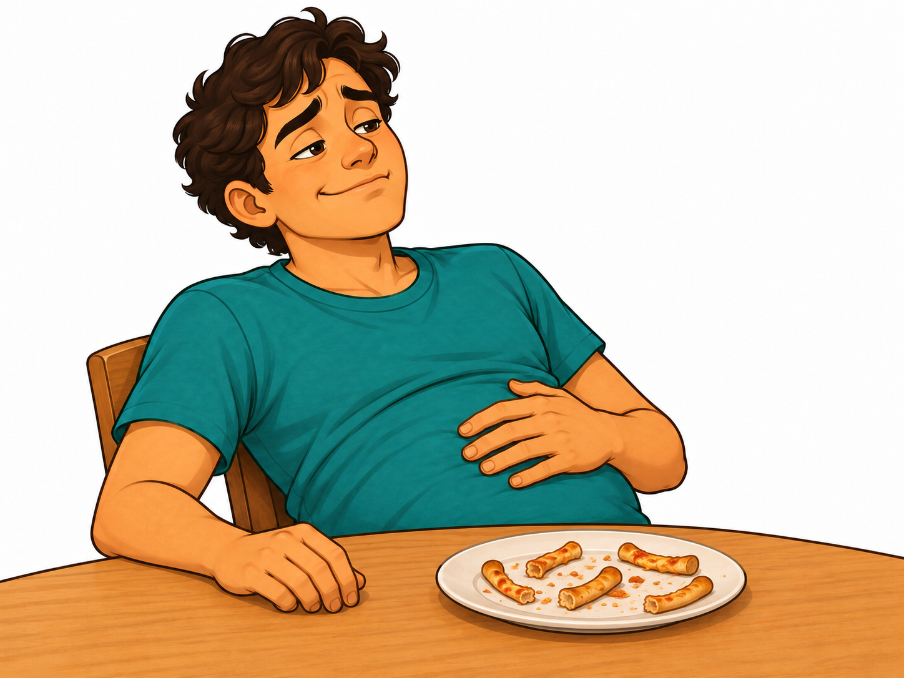

Describe utility, and how consumers spend to maximize it
7.5
Calculate the utility-maximizing choice using marginal utility per dollar
7.4
Contrast and compute total utility and marginal utility
7.2
Identify and contrast the substitution effect and the income effect
7.3
Find consumer equilibrium using a budget constraint
7.6
Describe how demand curves are derived from consumer equilibrium
What do I like?utility
→
What can I afford?the budget line
→
What is the best I can do?utility per dollar
→
What if a price changes?the demand curve
Read the objectives down the left column, then down the right: that is the order the story needs.
Before any theory · hands up
When a price goes up, why do you buy less?
What Unit 4 told you
“Ceteris paribus, a higher price leads to a lower quantity demanded.” Unit 4 stated the law of demand. Today we find out why it holds.
One Labubu

Many, many Labubus
AI can't afford as much anymore
BOther things become the better deal
CThe last few weren't worth that much to me anyway
DAll of the above
Hands up for each one, and put the counts on the board. We come back to them at the end of class—each letter turns out to be a piece of economics.
LO 7.1 · the building block
Utility is the satisfaction you get from consuming
Utility: the satisfaction, or happiness, a person gets from consuming a good or service. We count it in
utils—a classroom unit, not something you can buy or read off a meter.
It is personal
The same NC State–UNC ticket gives a die-hard Wolfpack fan many utils and a friend tagging along very few. Unit 5 said it in dollars: willingness to pay differs by person.
It is not money
Utils are not dollars. They are also not a verdict on whether a good is healthy, worthy or important.
Compare within a person
You can rank your own options. You cannot say that your 5 utils are more than your roommate's 3.
Economics does not tell people what to like. It takes preferences as given and asks:
with a limited budget, which choice gives the most satisfaction?
LO 7.1 · concept check
Which statement can an economist actually make?
Pick one.
This is also why Unit 5 added up dollars of consumer surplus rather than utils: dollars can be added across buyers; utils cannot.
LO 7.4 · two ways to count satisfaction
Total utility adds up; marginal utility is the extra from one more
José's T-shirts
T-shirts
Total utility (TU)
Marginal utility (MU)
1
22
22
2
43
21
3
63
20
4
81
18
5
97
16
6
111
14
7
123
12
8
133
10
MU =change in total utilitychange in quantity
1
3rd T-shirt: 63 − 43 = 20 utilsWhat does one more T-shirt add to the total?
2
Fill the whole column the same wayEach MU is one TU minus the TU just above it.
3
Going back: TU is the sum of the MUs22 + 21 + 20 = 63, the TU of three T-shirts.
TU is the whole pile; MU is only the newest piece. Read the finished MU column from top to bottom—what do you notice?
LO 7.4 · the pattern in that MU column
The law of diminishing marginal utility
Each additional unit of a good tends to add less satisfaction than the unit before it.
José's MU column: 22, 21, 20, 18, 16, 14, 12, 10.
First slice: delicious!Wonderful when you are hungry.

After five slices: full!No desire for another slice.
Coffee
The first cup wakes you up. The fourth cup of the morning barely registers.
Study hours
The first hour before an exam helps a lot. The seventh hour in a row adds much less.
Why it happens
You put the first unit to its most important use. Each later unit goes to a less important one.
What it does not mean
Total satisfaction does not fall. Each extra unit adds less—TU still rises as long as MU is positive.
LO 7.4 · reading the two curves together
TU keeps climbing as long as MU is positive
Slice
1
2
3
4
5
6
MU
24
18
12
6
0
−6
TU
24
42
54
60
60
54
Predict: the 6th slice has MU = −6. What is TU after six slices?
+
MU > 0 → TU risesmore slowly as MU shrinks
0
MU = 0 → TU is at its peakthe 5th slice adds nothing
−
MU < 0 → TU falls: 60 − 6 = 54the 6th slice makes you worse off
MU is the slope of TU: big steps early, flat at the top, downhill after that.
LO 7.4 · total utility vs. marginal utility
Why pay less for your 30th Labubu?
Your 1st Labubu
Total utility: small. You own just one.
Marginal utility: large. You wanted it badly.
Your 30th Labubu
Total utility: large. You now own 30.
Marginal utility: tiny. One more adds little.
What you will pay follows marginal utility, not total utility. You never buy the whole shelf at once—you decide on the next one.
Same logic in markets. A rare Labubu is pricey because few exist. Water is essential yet cheap—until a drought makes one more acre-inch of irrigation water precious.
LO 7.4 · marginal utility and willingness to pay
What if the next Labubu is special?
You already own many regular Labubus. You especially want this limited edition.Which would you pay more for as your next one?
Another regular Labubu
Lower MU: one more like the ones you own adds little satisfaction.
A limited edition you want
Higher MU: this version adds more satisfaction because you especially want it.
Higher MU → higher willingness to pay. You would pay more for this limited edition than for another regular Labubu.
These are different versions. Diminishing MU concerns additional units of the same good.
LO 7.3 · you have seen this graph before
A budget line is a PPF for a shopper
Unit 3
The volunteer's PPF
Unit 7
José's budget line
Unit 3 · the PPF
Unit 7 · the budget line
Fixed resource
hours in the shift
dollars of income
Every point on the line
uses the whole shift
spends the whole budget
Slope
opportunity cost
opportunity cost, set by the two prices
Shifts out when
there is more work time
income rises
Rotates when
one task gets faster
one price changes
Unit 3's PPF showed what was possible, not which point the volunteer preferred. Utility is the missing piece:
the budget line shows what José can buy; utility tells us what he will buy.
LO 7.3 · José's budget constraint
José has $56 for T-shirts ($14) and movies ($7)
14T + 7M = 56
Intercepts: all T-shirts, 56 ÷ 14 = 4; all movies, 56 ÷ 7 = 8.
Slope: 1 T-shirt costs 2 movies; 1 movie costs ½ T-shirt.
Can José afford…
a
5 T-shirts?$70 > $56 — no, outside the line
b
2 T-shirts + 3 movies?$49 — yes, inside, with $7 left over
c
3 T-shirts + 3 movies?$63 > $56 — no, outside
We assume José spends this $56 and no more—no borrowing, no saving. On the line: all $56 spent. Inside: money left over. Outside: unaffordable.
LO 7.3 · what moves the budget line
Did the choice change—or the constraint?
The same question we asked of the PPF in Unit 3. Predict each picture before it appears.
José's income rises: $56 → $70
The movie price falls: $7 → $6
Parallel shift. Prices did not change, so neither did the slope (1 T-shirt = 2 movies). New intercepts: 5 T-shirts or 10 movies.
Rotation. The T-shirt intercept stays at 4; the movie intercept grows to 56 ÷ 6 = 9⅓. One price changed, so the slope changed.
LO 7.3 · consumer equilibrium, the slow way
Which affordable bundle gives José the most utility?
José's total utility
Units
T-shirts
Movies
1
22
16
2
43
31
3
63
45
4
81
58
5
—
70
6
—
81
7
—
91
8
—
100
Every bundle on the budget line
Point
Bundle (T, M)
TU from T-shirts + movies
Total utility
P
(4, 0)
81 + 0
81
Q
(3, 2)
63 + 31
94
R
(2, 4)
43 + 58
101
S
(1, 6)
22 + 81
103best
T
(0, 8)
0 + 100
100
S = 1 T-shirt and 6 movies, 103 utils. That is José's consumer equilibrium: the affordable bundle with the highest total utility. T has the most stuff, yet only 100 utils.
Checking every bundle works when there are five of them. It is slow—and it does not tell us why S wins. Next: a faster rule.
LO 7.5 · a faster rule
Compare utility per dollar, not utility
MU per dollar =marginal utilityprice
José's 1st T-shirt
MU = 22 utils · price $14
22 ÷ 14 = 1.57 utils per $
José's 1st movie
MU = 16 utils · price $7
16 ÷ 7 = 2.29 utils per $
Which should José buy first?
Pick one.
LO 7.5 · spend the $56 one purchase at a time
Build José's bundle using MU per dollar
T-shirts · $14 each
Unit
MU
MU per $
1st
22
1.57
2nd
21
1.50
3rd
20
1.43
4th
18
1.29
Movies · $7 each
Unit
MU
MU per $
1st
16
2.29
2nd
15
2.14
3rd
14
2.00
4th
13
1.86
5th
12
1.71
6th
11
1.57
7th
10
1.43
8th
9
1.29
$0spent of $56
(0, 0)T-shirts, movies
Spent $0 so far.
Where the numbers come from: the 2nd movie's MU is 31 − 16 = 15, and 15 ÷ $7 = 2.14. Every cell is built the same way.
Purchase order: movies 1–5, then the 1st T-shirt and the 6th movie (tied at 1.57). All $56 spent at (1 T-shirt, 6 movies) = S.
LO 7.5 · the utility-maximizing rule
Could reallocating spending raise utility?
Your budget is fully spent. Rice and fruit are bought by weight, so you can adjust either purchase by a small amount.
Rice
4utils per dollar
Fruit
2utils per dollar
Predict: which way should a little money move?
Move spending: fruit → rice
A small shift gains more utility from rice than it gives up from fruit.
More rice → rice's MU falls. Less fruit → fruit's MU rises.
The marginal benefits per dollar move closer together.
MUricePrice=MUfruitPfruit
At an interior optimum, no small shift can improve utility. Equalize MU per dollar, not MU itself.
Budget fully spent · divisible goods · diminishing MU · both goods consumed
Back to José: at S = 1 T-shirt + 6 movies, check whole-item trades
Both trades make him worse off. For whole items, compare feasible bundles; exact MU/P equality need not occur.
Also called the optimal consumption rule; the best bundle is consumer equilibrium.
LO 7.5 · two ways the rule shows up on a quiz
Use the rule to fix a choice—or to find a price
A · Not at the best bundle yet
Coffee costs $4 per cup, with current MU = 20 utils per cup. Tea costs $2 per cup, with MU = 6. Your budget is fully spent; amounts are adjustable. Which way should spending move?
1
Coffee: 20 ÷ 4 = 5 · Tea: 6 ÷ 2 = 3utils per dollar
2
Move spending from tea to coffeeAs you do, coffee's MU falls and tea's MU rises, until the two ratios meet.
B · Work backward to a price
Assume equal MU per dollar at the best bundle. The last concert ticket gave 90 utils and cost $30; the last movie gave 36 utils. What must a movie cost?
1
Concert: 90 ÷ $30 = 3 utils per $Use the stated equal-MU/P assumption.
2
36 ÷ P = 3 → P = $12The movie must cost $12.
LO 7.5 · your turn · work it on paper first
$30 at the NC State Fair
The setup illustrative numbers
A ride costs $4. An order of fried Oreos costs $6. You have $30.
Unit
MU of rides
MU of Oreos
1
40
72
2
32
48
3
24
36
4
20
24
5
16
12
6
8
—
a
What do you buy first?Oreos: 72 ÷ 6 = 12 per $ beats 40 ÷ 4 = 10 per $.
b
What do you buy second?A ride: 10 per $, the best of what is left.
c
Final bundle, and money spent?Then a ride and an Oreo tie at 8 per $, and tie again at 6 per $. Final: 3 rides + 3 Oreos = $12 + $18 = $30.
d
Does the rule check out?Last ride: 24 ÷ 4 = 6. Last Oreo: 36 ÷ 6 = 6. Equal, all $30 spent: TU = 252, and no other affordable bundle beats it (next best: 236).
Income changes · normal or inferior?
Kimberly's income doubles. Where does her new choice land?
Concert tickets $50, overnight stays $200. Income $1,000 → $2,000. She was at M: 3 stays and 8 tickets.
N
More of bothBoth goods are normal.
P
Fewer overnight staysFor her, overnight stays are inferior.
Q
Fewer concert ticketsFor her, concert tickets are inferior.
Unit 4's definition: a normal good is bought more when income rises; an inferior good, less. The dashed lines through M make the comparison easy.
LO 7.2 · substitution effect and income effect
A price change works through two effects
Hold money income fixed; let the price of one good change.
Substitution effect
The change in consumption caused by a change in relative prices, holding purchasing power constant.
Ask: which good is now relatively cheaper?
Consumers substitute toward relatively cheaper goods and away from relatively more expensive ones.
Income effect
The change in consumption caused by a price change altering the purchasing power of your money income.
Same dollars, different buying power. A lower price lets your money buy more.
When buying power rises: normal goods ↑; inferior goods ↓. Reverse when it falls.
Quick check: movies get cheaper. Which effect does each statement describe?
“Movies are cheaper relative to T-shirts.”
Substitution effect
“The same $56 now buys more.”
Income effect
The actual change in consumption combines both effects.
LO 7.2 · one price change, two effects
Movies drop from $7 to $6. Two things happen at once.
1 · Substitution effect
Relative prices changed. A T-shirt used to cost 2 movies; now it costs 14 ÷ 6 = 2.33. Movies are relatively cheaper, so José substitutes toward movies.
2 · Income effect
More buying power, the same $56 income. His old bundle S now costs only $50, leaving $6. The rise in buying power favors more of normal goods and less of inferior goods.
Unit 6 link: the income effect is large when a good takes a big share of the budget (housing) and tiny when it does not (salt).
LO 7.2 · adding up the two effects
At $6 a movie, José moves from (1, 6) to (1, 7)
M
Movies: 6 to 7 in the best bundleSubstitution favors more movies. If movies are normal, greater buying power also favors more.
T
T-shirts: still 1 in the best bundleFor a normal good, the effects point in opposite directions. Whole-item quantities can stay unchanged.
Why seven movies and not eight: at $6, the 7th movie gives 10 ÷ 6 = 1.67 per $, above the 1st T-shirt's 1.57; the 8th gives only 9 ÷ 6 = 1.50.
Good that got cheaper
The other good
Substitution effect
+ more
− less
Income effect, normal good
+ more
+ more
Income effect, inferior good
− less
− less
Substitution effect: always toward the good that became relatively cheaper.
Income effect: its direction depends on normal versus inferior.
If a price rises, flip every sign in the table. With whole items, an unchanged quantity does not prove exact cancellation.
LO 7.2 · predict before we reveal
Coffee gets more expensive. You buy less coffee—and less tea.
Your question
For tea, which effect was bigger?
Pick one.
Substitution effect on tea: tea is now relatively cheaper than coffee → more tea.
Income effect on tea: your budget now buys less → less tea, a normal good.
Mirror image: pizza gets cheaper; you buy more pizza but fewer tacos. For tacos, the substitution effect won.
LO 7.6 · from choices to a demand curve
Change only the movie price, re-run the list, record the quantity
José's best bundle at each movie price
José's demand for movies
Movie price
Best bundle (T, M)
Money spent
Movies demanded
$7
(1, 6)
$56
6
$6
(1, 7)
$56
7
$8
(1, 5)
$54 — the last $2 buys nothing
5
Held fixed: income $56, the T-shirt price $14, José's tastes.
LO 7.6 · why demand slopes down · back to the start of class
A, B and C were all right
A
“I can't afford as much”
= the income effect. A higher price shrinks what the budget can buy, so you buy less of a normal good.
B
“Other things are the better deal”
= the substitution effect. The good is now relatively pricier, so you shift toward others. It always pushes quantity down.
C
“The last few weren't worth it”
= diminishing marginal utility. Each extra unit is worth less, so only a lower price gets you to buy more. The height of demand is marginal WTP (Unit 5).
Every point on a demand curve comes from a consumer's best affordable bundle.
Income, other prices and tastes are held fixed—change one of them and the whole curve shifts (Unit 4).
Unit 7 checkpoint · exit ticket
Six moves complete the unit
LO 7.1 · Utility is personalRank options within one person; never compare utils across people.
LO 7.5 · Allocate spending using MU/PDivisible goods, both consumed: equalize MU/P at the optimum. Whole items: compare feasible bundles.
LO 7.4 · TU adds up; MU is the extraMU = change in TU; TU = the sum of the MUs. TU rises while MU is positive.
LO 7.2 · Separate two price effectsSubstitution: relative prices change. Income: purchasing power changes, even with the same money income.
LO 7.3 · Draw the budget lineIntercept = income ÷ price. Income shifts the line; one price change rotates it.
LO 7.6 · Read demand as choicesEach point on a demand curve is a consumer equilibrium at that price.
Exit ticket. For (a)–(b), use the continuous-model rule. Coffee costs $2 and bagels $3; you spend all your money. Their marginal utilities are 10 and 15.
(a) Are you maximizing utility? (b) If the last bagel gave 12 utils instead, what should you buy more of?
(c) Bagels get cheaper, and you buy more bagels but less coffee. For coffee, which effect was bigger?
(a) Yes: 10 ÷ 2 = 5 = 15 ÷ 3. (b) Coffee: 10 ÷ 2 = 5 beats 12 ÷ 3 = 4, so move dollars toward coffee.
(c) The substitution effect: it pushed coffee down (bagels became relatively cheaper), the income effect pushed coffee up, and coffee fell.